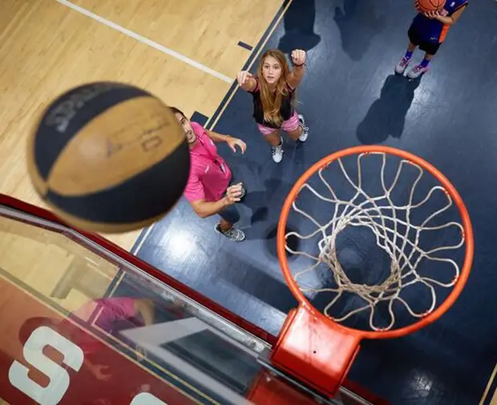
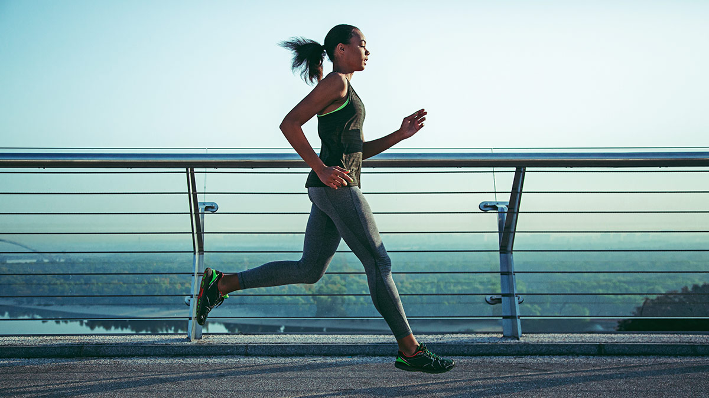

Photography I love capturing the beauty of nature and life through my lens. Photography helps me express creativity and view the world from unique perspectives.
Traveling Exploring new places, cultures, and cuisines is one of my greatest passions. Traveling broadens my horizons and provides inspiration for personal growth.
Basketball Playing basketball has been a favorite pastime of mine since childhood. It teaches teamwork, discipline, and focus while keeping me active and energized. 
Running Running is my go-to activity for staying fit and clearing my mind. I participate in local marathons and enjoy the sense of accomplishment it brings. 
Creativity I enjoy brainstorming innovative ideas and solving problems creatively. This quality drives my passion for projects like photography and programming.